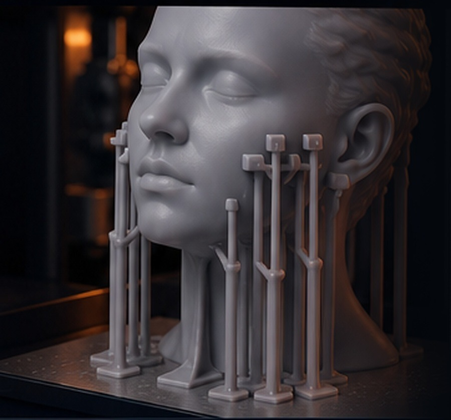
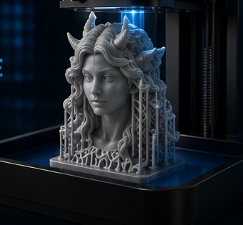
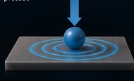
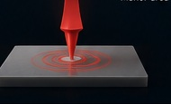
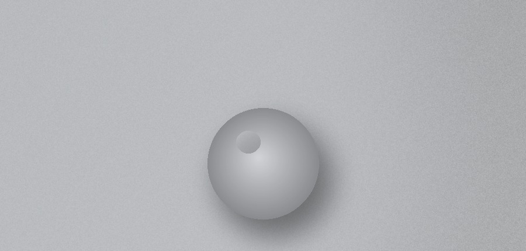
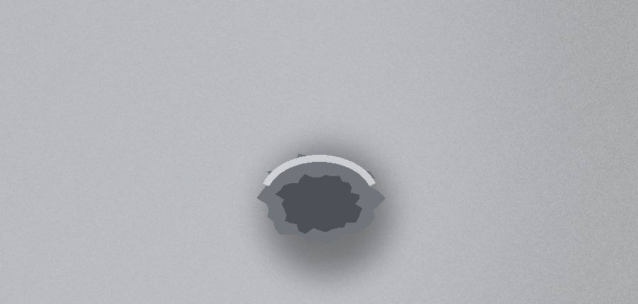
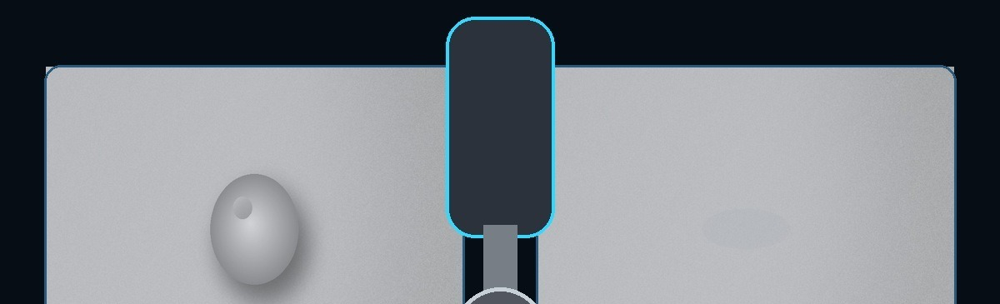

A ponta do suporte ocupa poucos décimos de milímetro, mas concentra
força, sustenta a peça e define parte do retrabalho. O melhor contato
é o menor que mantém estabilidade sem arrancar material da superfície.
Leitura mecânica do contatoRelevo × cavidadeProtocolo comparativoAssistente de decisão

Suportes distribuídos — o ponto de contato de cada um decide parte
do acabamento final.
O processo em uma frase
Use a menor área de contato que ainda mantenha a peça estável em
toda a impressão — nem tão fraca que rompa no peel, nem tão
agressiva que vire um castigo no pós-processo.
1
O que realmente é o contato do suporte?
É a pequena região onde a ponta do suporte se une ao modelo.
Durante a impressão ela precisa transmitir carga; depois,
precisa romper de forma controlada.
O contato não deve ser analisado apenas como um "ponto". Ele
possui
forma, diâmetro, profundidade, direção e área efetiva.
Esses elementos determinam como a força chega à superfície e como
a ligação se rompe.
Regra prática: use a menor área de contato que ainda
mantenha a peça estável em toda a impressão.
Um contato fraco demais pode se romper durante o peel. Um contato
agressivo demais imprime bem, mas transforma o pós-processo num
castigo e pode danificar detalhes que não voltam com lixa.

2
Como o formato muda a concentração de força
A mesma carga pode ser distribuída por uma transição arredondada
ou concentrada numa ponta mais direta.

Transição suave
Contato esférico — transição mais suave
A pequena esfera cria uma região elevada e uma transição
arredondada. A ruptura tende a ser mais previsível,
facilitando a remoção.
Vantagem: remoção controlada ·
Marca típica: pequeno relevo · Uso forte: áreas
visíveis e detalhes

União rígida
Contato direto — união mais rígida
A ponta cura diretamente contra o modelo. A ligação pode ficar
mais firme, porém a força de remoção se concentra numa área
pequena.
Vantagem: estabilidade elevada ·
Marca típica: cavidade ou lasca ·
Uso forte: regiões ocultas e cargas altas
A forma não trabalha sozinha: “esférico” e “direto” descrevem
a geometria criada pelo fatiador, mas não garantem um modo de
ruptura. Diâmetro, profundidade, exposição, resina, área
efetivamente curada e direção do corte podem inverter o resultado
esperado.
3
Relevo e cavidade não são o mesmo defeito
Uma saliência pode ser rebaixada. Uma cavidade representa
material perdido e exige nivelar uma área maior ou preencher a
falha.

Relevo elevado — mais visível antes do acabamento
O resíduo fica acima da superfície. Pode parecer maior logo
após a remoção, mas a lixa consegue alcançá-lo gradualmente
sem aprofundar a região vizinha.

Perda de material — menor saliência, correção mais difícil
A ruptura remove parte do modelo. Para esconder a marca, pode
ser necessário lixar uma área extensa, preencher, aplicar
primer ou aceitar alteração dimensional local.
Sinceridade técnica: a menor marca logo após cortar o suporte
não é necessariamente o melhor acabamento final. Avalie a peça
depois da remoção, da limpeza da marca e da inspeção sob luz
lateral.
4
Protocolo Quanton3D para comparar contatos
Mude apenas uma variável por vez. Sem controle experimental, o
resultado vira opinião.
Mesma geometria
Use o mesmo corpo de prova, orientação e região de suporte.
Mesmo processo
Mantenha resina, temperatura, exposição, lavagem e pós-cura.
Troque só o contato
Compare forma, diâmetro ou profundidade em testes separados.
Meça três momentos
Registre estabilidade, força de remoção e aspecto final.
Repita
Faça mais de uma impressão para separar tendência de acaso.
Registre: taxa de sucesso, contatos rompidos, tempo de
remoção, diâmetro e profundidade da marca, tempo de lixamento e
perda dimensional.
5
Tendências de comportamento
São tendências mecânicas para orientar testes, não receitas
universais.
Critério
Esférico
Direto
Leitura prática
Facilidade de remoção
Geralmente maior
Geralmente menor
A transição arredondada favorece ruptura mais controlada.
Estabilidade estrutural
Moderada a alta
Alta
A união direta pode exigir mais força para romper.
Marca imediata
Relevo mais perceptível
Saliência menor, porém risco de cavidade
A inspeção imediata não conta toda a história.
Acabamento abrasivo
Frequentemente mais simples
Pode exigir correção localizada ou preenchimento
É mais fácil reduzir material elevado que recuperar material
perdido.
Detalhes frágeis
Mais tolerante
Maior risco de lascamento
Tenacidade da resina e técnica de corte mudam o resultado.
Região oculta de alta carga
Funciona com dimensionamento correto
Pode ser vantajoso
Use a força extra onde a marca não compromete a peça.
6
Remoção e acabamento sem destruir a peça
O momento e a ferramenta de remoção influenciam tanto quanto o
formato do contato.
Sequência recomendada
Inspecione: identifique áreas frágeis e visíveis.
Corte próximo, sem arrancar: deixe pequeno sobremetal
quando necessário.
Defina o momento pela resina: depois de lavar e secar,
compare a remoção antes e depois da pós-cura. Manter suportes
durante a cura pode controlar deformação; remover a peça ainda
“verde” pode exigir menos força em alguns materiais. Siga a
ficha técnica da resina.
Use abrasivo progressivo: rebaixe o relevo sem criar
uma depressão.
Confira com luz lateral: reflexos revelam ondulação
melhor que visão frontal.

Segurança: lave e seque a peça antes da remoção; use luvas
nitrílicas e proteção ocular contra fragmentos. Controle o pó do
lixamento com o método e a proteção respiratória adequados. Não
aqueça resina não curada nem use água quente sem autorização
expressa do fabricante.
Não existe formato campeão em tudo: resina, geometria,
exposição, orientação e método de remoção mudam o modo de fratura.
7
Parâmetros que trabalham em conjunto
O formato sozinho não corrige um suporte subdimensionado nem
salva uma orientação ruim.
⭕ DiâmetroMais diâmetro aumenta a capacidade de carga, mas amplia a marca
potencial.
↧ ProfundidadePouca profundidade solta; profundidade excessiva agride o
modelo.
🕸️ QuantidadeVários contatos moderados podem dividir a carga melhor que
poucos contatos brutais.
🧪 TenacidadeResina rígida e frágil lasca com mais facilidade; resina tenaz
tolera melhor a remoção.
☀️ ExposiçãoEnergia excessiva engrossa a ligação e pode aumentar a força
necessária para cortar.
📐 OrientaçãoDistribua contatos fora das áreas nobres e reduza grandes
seções paralelas à película.
8
Classifique a marca antes de corrigir
Defeitos parecidos pedem ações diferentes. Inspecione a peça
limpa e seca, sob luz lateral, antes de lixar.
▲ RelevoMaterial acima da superfície nominal. Corte o excesso e use
abrasivo progressivo, preservando a geometria ao redor.
▼ Cratera ou cavidadeMaterial arrancado abaixo da superfície nominal. Evite ampliar
a falha; avalie preenchimento, primer ou aceitação
dimensional.
✳ Esbranquiçamento ou microtrincaSinal de fratura e tensão local. Pare de forçar, revise o corte
e verifique fragilidade, cura e geometria do contato.
▱ Deformação ou região planaIndica distribuição de carga, orientação ou suporte
insuficiente; não é apenas um defeito da ponta de contato.
Registro mínimo: fotografe com a mesma iluminação,
identifique o tipo de defeito e meça a região antes e depois do
acabamento. Assim a equipe separa melhora real de impressão visual.
9
Assistente de decisão
Transforme as prioridades da peça numa estratégia inicial de
teste.
Resultado inicial: CONTATO ESFÉRICO
Priorize remoção controlada e preservação superficial.
Confirme estabilidade ajustando diâmetro, profundidade e
distribuição.
Pontuação didática — esférico 6 × direto 6.
✓
Diretriz técnica Quanton3D
Acabamento profissional começa ainda no fatiamento.
Princípios que ficam
O contato deve sustentar a impressão e romper sem arrancar
material desnecessário.
Relevo elevado costuma ser mais simples de corrigir que uma
cavidade.
Contato direto pode oferecer força extra, mas pede região
adequada e remoção cuidadosa.
Diâmetro, profundidade, quantidade, orientação e material
devem ser avaliados juntos.
A decisão correta considera o acabamento final, não apenas a
peça recém-retirada.
Como padronizar na produção
Crie um corpo de prova por família de resina.
Registre formato, diâmetro e profundidade aprovados.
Separe perfis para áreas visíveis e áreas ocultas.
Defina ferramenta e momento de remoção.
Fotografe antes e depois do acabamento.
Revalide quando mudar resina, impressora ou altura de camada.
Objetivo: repetir o melhor resultado com o menor
retrabalho possível.